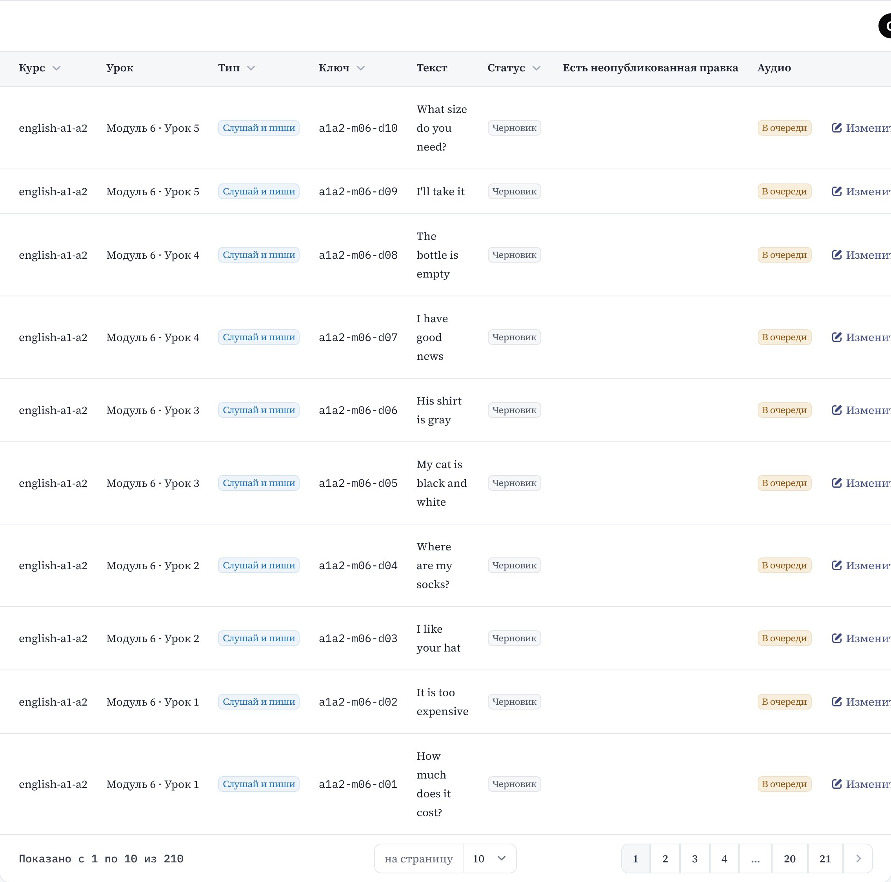
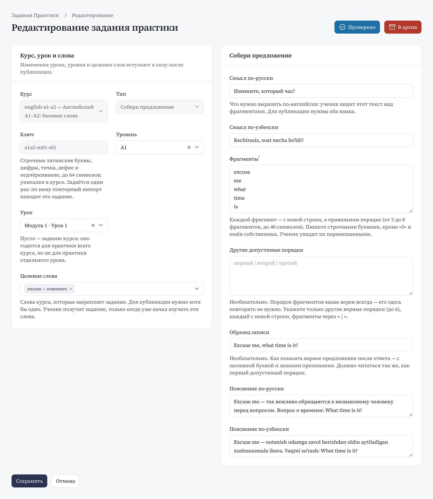
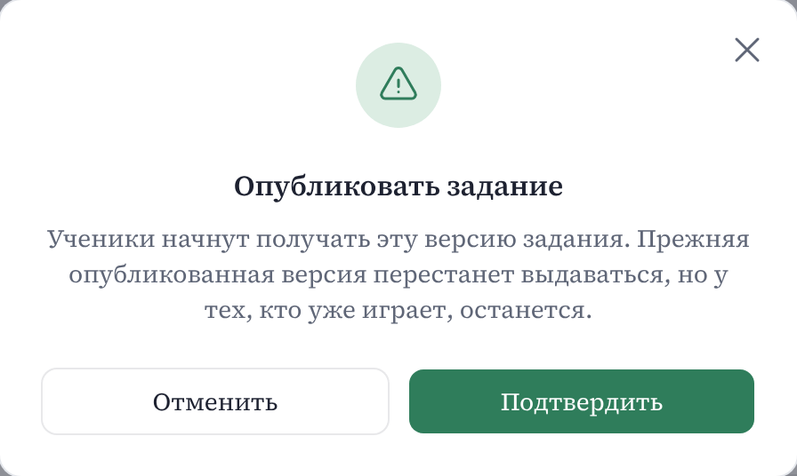
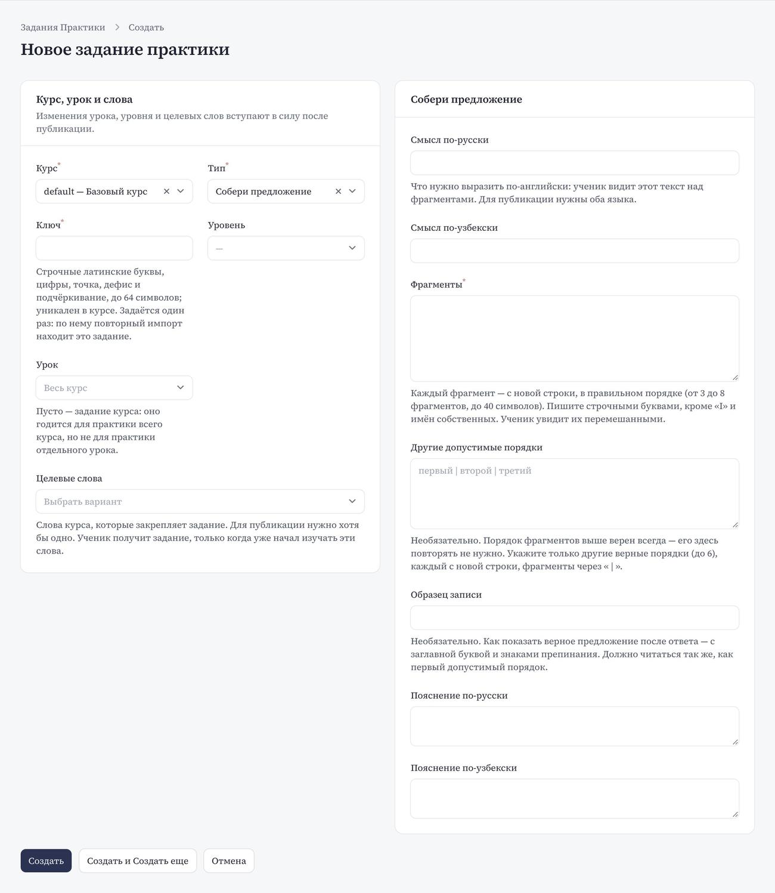
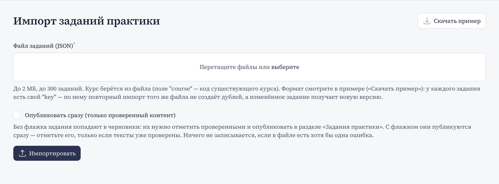
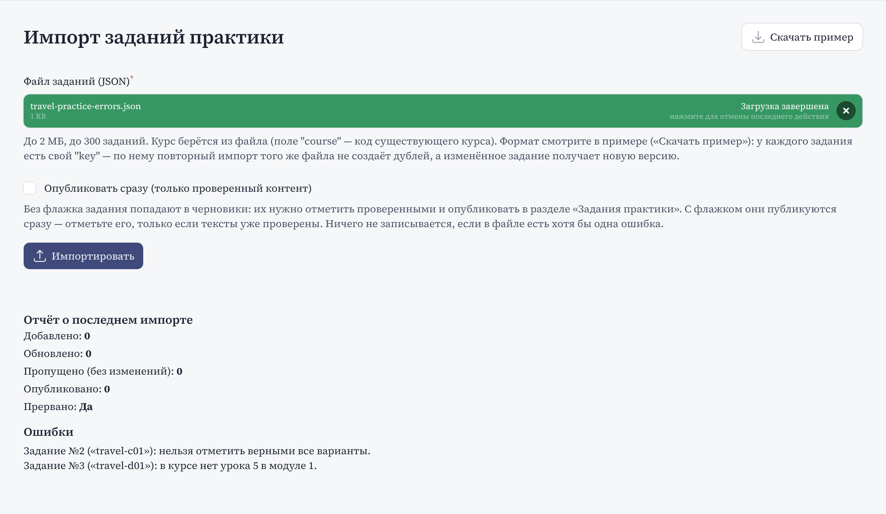

Практика — короткие упражнения сверх карточек: собрать предложение, подобрать сочетание, записать фразу на слух, образовать форму слова, найти ошибку. Режим «Найди пары» заданий не требует: он собирается из слов курса. Разделы Практика → Задания практики и Импорт заданий — только для администратора.
Кому из учеников открыта практика (никому, только «пилоту» или всем) и какие режимы включены, задаёт технический администратор в настройках сервера. Учеников в пилот включают в карточке ученика (глава «Ученики»).
| Тип | Что делает ученик | Что заполняют |
|---|---|---|
| Собери предложение | расставляет перемешанные фрагменты по смыслу | смысл по-русски и по-узбекски, фрагменты по строкам в правильном порядке (3–8), другие допустимые порядки, образец записи, пояснения |
| Подбери сочетание | выбирает слово в пропуск ___ из трёх вариантов | фраза с одним пропуском, ровно три варианта, один или два верных (не все три), перевод, пояснение |
| Слушай и пиши | слушает фразу и записывает её | фраза, другие верные записи, перевод. Фраза озвучивается автоматически после сохранения |
| Форма слова | вписывает в пропуск нужную форму базового слова (decide → decision) | предложение с пропуском, базовое слово, верные формы (до 4), перевод и пояснение |
| Найди ошибку | находит неверное слово и выбирает исправление | предложение, где ошибочное слово отмечено звёздочками (*on*), три варианта исправления с одним верным, перевод исправленного предложения, пояснение |

Фильтры: курс, тип, статус, аудио, «Есть неопубликованная правка». Поиск — по ключу и тексту. В строке — Изменить и кнопки смены статуса; у диктантов ещё Сгенерировать аудио заново.
| Колонка «Аудио» | Что значит |
|---|---|
| Не нужно | тип без аудио |
| В очереди | фраза ждёт озвучки. Диктант без готового аудио ученикам не выдаётся |
| Готово | аудио записано |
| Ошибка | озвучить не удалось; когда служба озвучки снова работает, нажмите Сгенерировать аудио заново |
Текст задания никогда не перезаписывается: каждое Сохранить создаёт новую версию-черновик. Ученики получают только опубликованную версию.
| Кнопка | Что делает |
|---|---|
| Проверено | отмечает текущую версию проверенной. Опубликовать черновик напрямую нельзя |
| Опубликовать | ученики начинают получать эту версию. Прежняя опубликованная перестаёт выдаваться, но кто уже играет — доиграет с ней |
| В архив | задание перестаёт выдаваться; из архива его можно вернуть |
| Вернуть | возвращает задание из архива в прежнее состояние |
Если опубликованное задание поправили, ученики продолжают получать старую версию, а в списке у задания стоит «Есть неопубликованная правка» — пока новую версию не отметят проверенной и не опубликуют. Урок, уровень и целевые слова тоже принадлежат версии: их смена вступает в силу после публикации.


При публикации проверяется больше, чем при сохранении: нужно хотя бы одно целевое слово и тексты на обоих языках (смысл и пояснение предложения, перевод и пояснение сочетания, перевод диктанта). Если чего-то не хватает, появится красное сообщение «Не получилось» с причиной.
Если пока вы читали задание, его изменил импорт или другой администратор, кнопки ответят «Задание изменили, пока вы его смотрели. Откройте его заново.» — ничего не изменится. Откройте задание ещё раз и проверьте новую версию.

| Поле | Правила |
|---|---|
| Курс, Тип | задаются при создании; тип потом не меняется |
| Ключ | строчные латинские буквы, цифры, точка, дефис, подчёркивание, до 64 символов, уникален в курсе. Задаётся один раз: по нему повторный импорт находит задание |
| Урок | пусто — задание всего курса (годится для практики курса, но не отдельного урока) |
| Уровень | A1–C2 |
| Целевые слова | активные слова курса, которые закрепляет задание. Ученик получит задание, только когда уже начал учить все эти слова |
| Текстовые поля | обычный текст: знаки < и > не принимаются («разметка не поддерживается») |
Страница Практика → Импорт заданий загружает до 300 заданий одним файлом JSON (до 2 МБ) в формате lexiflow-practice/1. Скачать пример даёт правильный образец.

"format": "lexiflow-practice/1", "course" — код курса, "items" — список заданий, у каждого свой "key".Повторный импорт того же файла не создаёт дублей: задание с тем же ключом без изменений пропускается, изменённое получает новую версию («обновлено»). Ключ задания в архиве не принимается — сначала верните задание из архива.

Импорт — «всё или ничего»: одна ошибка в любом задании отклоняет весь файл. Флажок «Опубликовать сразу» — ваше подтверждение, что тексты проверены: опубликованные задания сразу получают ученики.